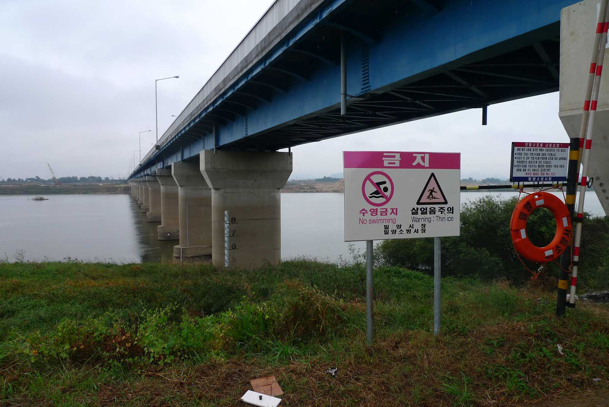

Canoe Trip from Daegu (대구) to Busan (부산)

This trip occurred during the month of August 2010. This is not the ideal time for a trip on a river in
Korea, but it was the only time that my partner was available. I had worried about the monsoon but that
year it had rained very heavily in July and August was dry. It did not mean that the monsoon did not
affect us as the NakDong (낙동강) River had flooded in July and this added the difficulty on finding a
location to land that was not covered with a fine mud deposited during the recent flood. This was the
usual three day trip similar to the trip on the Guem (금강) River trip in 2008. The major difference with
the last river was the lack of dams on this river. Related to the history of Korea this river had a
significant role in saving South Korea from being overrun during the first months of the Korean War in
1950. This river formed the front line of the war in July, August and the first half of September 1950.
More information about the river is found at the end of this document. The proposal was optimistic as we
never made it all the way to Busan. My canoeing partner for this trip would be Dr. Aviv Seger, a fellow
professor at Korea Institute of Science and Technology, KAIST.
Proposed NakDong (낙동강) River Trip

Enclosed is the information requested regarding the planned canoe river trip on the NakDong (낙동강) River
from Daegu (대구) to Busan (부산). The total length of the trip is 167 Km. We plan to start the trip on
August 20th in the morning near the school of DaSanChung Kyeo, to the west of Daegu (대구) and travel by
canoe downstream. We will canoe on the river the first day until the location where Route 67 crosses the
river is reached; a distance on the river of about 25 Km. The closest location name is Ugok-myeon (우곡면).
We will stay there overnight along the river and the next day at that location, August 21st, will
continue downstream on the river to where Route 45 crosses the river at Chilseo-myeon (칠서면). The
distance traveled that day is about 44 Km. On the third day, August 22nd, we plan to continue until we
reach the location on the river where Route 55 crosses the river at Samgyeongri where we will camp along
the river near the canoe. The distance traveled that day is 53 Km. The next morning, August 23rd, we
will continue on to Busan City arriving in the afternoon of 23rd of August. The distance traveled that
day is 45 Km. At Busan City we will take the canoe out of the river near Deadonggoungkyo and put the
canoe on the roof of the car and return to Daejeon that evening.
The NakDong (낙동강) River Trip Description

We loaded the car and put the canoe on the roof and left Daejeon (대전) for Daegu (대구) in the morning of
Friday August 20th, 2010. It took up a while to find a location described above in the proposal where
and we never did find the school mentioned in the above proposal. We drove along the road west of Daegu
until it approached as near as possible to the river. Looking at the photographs you can see that we
still had a good distance to traverse from the road to get all the gear and the canoe to the river’s
edge. After completing this part of the trip I had to spot the car in Busan and return. Busan is the
second largest city in South Korea and it took me a while to find a suitable parking area. That night I
slept in the car. Early in the morning of the second day, Saturday the 21st, I returned to the canoe and
we loaded up the canoe with the camping gear and food and were finally on the river by ten thirty. We
soon encounter rapids under the bridges. A few of these required that we exit the canoe and look for the
best approach to through the rapids. I always look to where the water is piling up and the waves largest
as that location would be the deepest part of the river in the rapids. Around 6 p.m. after travelling
about 45 kilometers we pitched the tent and prepared the dinner in a relatively clean location. We knew
this as we had the print out of the river in a water proof container that we checked along the way.
After our dinner, a group of Philippine workers from a local manufacturing plant came out on a motor
cycle and went swimming in the river near us. They were curious as to what we were doing. They seemed
very surprised when we told them that we were on the way to Busan and had been in Daegu that morning.
They looked at us and looked at the canoe and shook their heads like we were crazy!
Pollution in the river

The next morning, Sunday August the 22nd, we had eaten breakfast and packed the canoe ready to leave by
8:30 when the owner of the manufacturing plant came out to greet us. Probably the Pilipino workers had
told him about us that morning. He implied that we would never make it to Busan (He was right as we
found out the next day). We were soon on the river passing large dredges that were a part of the Four
Rivers Project, a major effort of the South Korean MB Lee Administration. A major goal of this project
was to clean out the river channels of the four major Korean rivers decreasing the chance of flooding by
increasing the capacity of the river channel. Much of this debris in the rivers was evidently caused by
the denudation of the Korean hills during the Korean War of 1950-1953. We soon found that the major
challenge for the trip would be the sun and related heat which sapped our energy and that combined with
the slow current meant that we only made about 45 kilometers that day. We set up a camp site on a sandy
bar around 6:30 in the evening. The next morning, we were back on the river by 8:30 and both of us were
relieved that this was the last day. That meant that it would not be a full day of paddling as after
that I had to go to Busan and retrieve the car because we had to be back at KAIST before too late in the
evening. This part of the river was very smelly and had many clumps of pollution as shown in the
photographs. In fact it was the largest amount of pollution that I have ever seen on a river. We also
passed a few more dredges and found a location that seemed to be a gun emplacement at the base of a
rocky cliff on the eastern side of the river. We had lunch there and continued on till we reached the
location where two large bridges cross the river. This was a perfect location to end the trip as the
road was near the river and there was also a bus stop in the nearby town that I could take a bus to
Busan. My partner packed up while I arrived at the car around 4:30 p.m. and then to the location where
we had landed with the canoe around 6:45 p.m. We arrived in Daejeon around 10:30 PM and waited until the
next morning to take the canoe off the car roof, organize all the gear and return the canoe to its
storage location. We may have reached Busan if we had continued on the next day, but I am not sure of
this because of the slow current and the heat.
The Fall Continuation of the Trip to Busan (부산)
The next trip on the NakDong (낙동강) River was in the fall with my cousin and was an overnight trip on
October 23 and 24, 2010. Now the Four Rivers Project was in full swing and there were multiple dredges
on the river. We met at the location where the canoe was stored in Daejeon and by 7:30 a.m. the canoe
was on the car roof and we were on the way to the location where the August canoe trip had ended. We
were at that location three and half hours later and on the river at 11:30 a.m. My cousin is a strong
paddler and we made good progress only stopping briefly for lunch. Then after a few hours of travelling
on the calm river after lunch we were stopped by a motor boat. They wanted to know what we were doing on
the river. They didn’t speak English but my Korean cousin Mathew was able to find out that they were
concerned and stopped us because there had been multiple threats against the Four Rivers Project. They
thought that we might be part of the environmental group that had threatened to stop the project or
sabotage one of the dredges as the extensive river dredging was a major reason for the opposition to the
project. Mathew explained that we were just on a recreational trip and we had no other reason than to
try to reach Busan. They must have believed us as they did not even check what we were carrying under
the mats in the canoe. We soon continued on and along the way saw many huge river dredges. These are
shown in the included photographs.
Camping in the mud
We finally found a suitable location for camping for the night around 6:00. It was muddy from the summer
flood but the mud was dry and since there was mud all along the riverbank this was the best we could do.
Also it was beginning to become dark because it was so late in the year. I have always avoided camping
after dark on these trips. Soon after dinner we were asleep in our tent only to be woken up at predawn
when it started to rain. Now anyone who camps knows that it is best to go on a camping trip when no rain
is forecast. I was surprised when I heard the rain on the tent in the night as it had not been
predicted. In our situation it was even more of a problem as we were camped on and surrounded by a thick
layer of deep flood mud. During breakfast the rain let up and by 9:30 we had the canoe loaded and soon
we were on the river. At a little after one o’clock we stopped to have lunch and then decided due to the
bad weather to call it a day. I was able to catch a bus to the location of the car and by two o’clock we
had the canoe on the roof and arrived back at Daejeon by six o’clock where we were met by my wife and
unloaded the canoe.
Avoid rivers after a flood
We still had not made it to Busan but over the last twenty four hours we had come within fifteen
kilometers of the city and decided that this was close enough. This trip also meant that I would never
canoe in the height of summer again. It was just too hot and not at all pleasant. The decision was also
made to never travel on a river after a flood. This river had been in flood stage one month before our
trip and a thick mud covered much of the shore line and also along most of the shore there were high
banks where the river had since the flood cut through the mud along the river edge making it difficult
to beach the canoe on the shore. Also I decided that I would rather canoe on the smaller rivers where
there would be a faster current and rapids to add some excitement to the trip.
Map with path of river
This map shows the path of the river and the location of Daegu where we put the canoe in west of the
city where the yellow colored road intersects with the NakDong (낙동강) River near the upper edge of
the map. This location is near the Route 45 sign in the northwest area of the map. On the first
Canoe trip we ended the journey at the location where Route 45 intersects with the river in the
center lower edge of the map. On the trip in October we went from this location to the intersection
of Route 55 and the NakDong (낙동산) River in the lower right hand area of the map. It would be useful
to download Naver maps on your smart phone if you can read Korean 한글 as they provide the most
detailed maps of Korea but otherwise google maps will give you the location names in both English
and Korean.
Map Showing the Location of the NakDong (낙동강) River
The Nakdong (낙동강) River (Rakdong in North Korean) is the longest river in South Korea, and passes
through major cities such as Daegu and Busan.
The Nakdong (낙동강) flows from the Taebaek Mountains (태백산) to the South Sea or Korean Strait, that
separates Korea from Japan. The river originates from the junction of the Cheolamcheon and
Hwangjicheon (황지천) streams in Dongjeom-dong(동점동), Taebaek city (태백시), Gangwon (강원도) province. From
there to its mouth it winds for about 506 km. The width of the river ranges from only a few meters
in its upper reaches, to several hundred meters towards its estuary.
Major tributaries include the Yeong, Geumho, and Nam (남) rivers. Together with its tributaries, the
Nakdong (낙동강) drains most of North Gyeongsang (경상복도) and South Gyeongsang (경상남도) provinces, along
with small portions of North Jeolla (전라복도), South Jeolla (전라남도), and Gangwon (강원). The total
watershed is 23,384 km².
History
The Nakdong (낙동강) River has played an important role throughout Korean history. The river basin has
been a favored dwelling-place for as long as people have inhabited the Korean peninsula. Numerous
Neolithic remains have been found in the valley. Picture is Hanoe Folk village on this river
(안동하회마을)
Around the 1st century, the valley is believed to have been inhabited by the Byeonhan confederacy
tribes. During the Three Kingdoms period, the Gaya confederacy controlled the valley, until they
were overrun by Silla in 562. These states exploited the river's potential for navigation and
commerce, operating a thriving trade in armor and weapons with neighboring countries, including
Yamato period Japan. Throughout the Silla (신라), Goryeo (고려), and Joseon (조산) periods, the river
continued to serve as a major transportation corridor in the Gyeongsang (경상) region.
Tragedy strikes

As a barrier to movement, the Nakdong (넉동강) River gained sudden prominence during the Korean War.
The southern length of the river formed the western portion of the Busan Perimeter, which the UN
forces fought to maintain during the autumn of 1950. The bridge over the Nakdong (낙동강) River at
Waegwan (왜관) was blown up on August 3, 1950 in an effort to prevent North Korean forces from
advancing on Daegu (대구). A large number of Korean refugees were killed in the explosion. Although
some North Korean forces did cross the Nakdong (낙동) River in places, for the most part the river
still marks their furthest advance.
The Nakdong (낙동) valley includes numerous floodplain wetlands, the most well-known of which are the
Joonam (주남) Reservoirs near Changwon (창원시) City and Upo Ramsar (우포 늪) site, in Changnyeong
(창녕)County, South Gyeongsang (경상남도) ). These wetlands, while significantly degraded and
over-developed, still provide habitat to a significant number of rare and threatened species, most
especially birds (such as the Baikal Teal Anas formosa and White-naped Crane Grus vipio), fish and
plants. Despite being home to the bustling Port of Busan, the Nakdong (낙동) Estuary is also
internationally important for waterbirds, despite recent ecologically-destructive developments
including reclamation for housing and industry (e.g. the Busan New Port), the ongoing construction
of a major bridge (the Miyeonji Bridge) and most recently the threatened construction of the Korean
Grand Canal project.
The Nakdong (낙동강) and its tributaries also serve as a major source of drinking water for the
inhabitants of the river basin and others nearby. However, water pollution due to domestic and
agricultural wastewater remains a serious concern.
Economic role
Although all but the southernmost reaches of the Nakdong (낙동강) River have ceased to serve as a major
commercial waterway, the river continues to feed those dwelling near it, both directly through
fishing and indirectly through irrigation. Substantial amounts of snails and catfish are taken from
the waters and used in local cuisine.
Near Andong (안동), a series of massive hydroelectric dams have been constructed, creating a small
chain of artificial lakes of which Andong Lake (안동호) is the largest. These lakes also support a
substantial recreational industry. Bass fishing is especially popular, since the lakes have been
artificially stocked with bass.
Pushing forward with his election promise, Lee Myung Bak (이명박), the president of South Korea from
2008 to 2013), aimed to include the Nakdong (낙동강) River in a new canal project spanning the length
of the country from Seoul to Busan. Encountering some controversy, ground has not yet been broken on
the Grand Korean Waterway1. This project never got off the ground. At the same time a part of the
project did happen and that was the dredging of the four largest rivers and the building of a number
of large dams to control flooding.